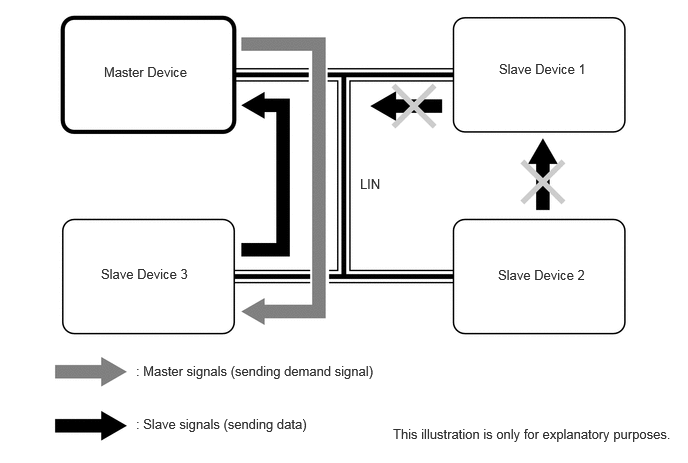

| Last Modified: 10-07-2025 | 6.11:8.1.0 | Doc ID: NM100000002GB1G |
| Model Year Start: 2024 | Model: Tacoma | Prod Date Range: [12/2023 - ] |
| Title: NETWORKING: LIN COMMUNICATION SYSTEM: GENERAL; 2024 - 2026 MY Tacoma Tacoma HV [12/2023 - ] | ||
GENERAL
GENERAL
(a) Local Interconnect Network (LIN) communication, which makes low-cost multiplex communication possible, is used as a multiplex communication system* to simplify vehicle wire harnesses and achieve high-speed communication.
LIN Specifications
|
Protocol |
Specifications |
|---|---|
|
Communication Speed |
19.2 kbps |
|
Communication Wire |
AV Single Wire |
|
Drive Type |
Single Wire Voltage Drive |
|
Data Length |
0 - 8 Byte (Variable) |
HINT:
*: The multiplex communication system connects several ECUs together with one communication line so that they can exchange data with each other. As a result, additional wiring is not required when integrating systems and adding functions.
(b) Communication Wire
(1) A single Automobile Vinyl (AV) wire is used for LIN communication.
|
Communication Wire |
Outline |
|
|---|---|---|
|
AV Single Wire |
 |
This is a lightweight single communication wire that consists of a single core line surrounded by insulation. Voltage is applied to this line in order to drive communication, and this system is called a "single wire voltage drive". |
(c) LIN Communication Protocol (Communication Rules)
(1) The LIN communication system makes it possible to send data by offsetting the timing at which each device uses the communication line so that one communication line is shared by all parts that make up the network. In order to do so, communication is performed according to a communication protocol (communication rules) that is shared by the ECUs. This communication protocol helps communication be performed smoothly and securely.
(2) LIN communication is composed of a network of one master device (control side) and multiple slave devices (controlled side), and it uses a master/slave system (single master system)* where the master device controls the slave devices.
HINT:
*: The master/slave system (single master system) uses a master device to manage the timing at which slave devices send information to prevent multiple slave devices from simultaneously sending information over the communication line, making smooth and secure data transmission possible.
(3) If a slave device does not receive a sending request from the master device, the slave device cannot send data to other slave devices.
(d) LIN communication is a multiplex communication network used by various systems that is designed for the main purpose of sending data between body control ECUs.
(e) Signals sent and received via LIN communication are sent to the CAN bus via ECUs connected to the CAN bus.
(f) LIN Communication Network
(1) The LIN communication network is composed of the door system, certification system, air conditioning system and charging system etc.
(g) A diagnostic tool can be connected to perform diagnostic communication. Refer to the Repair Manual for details.